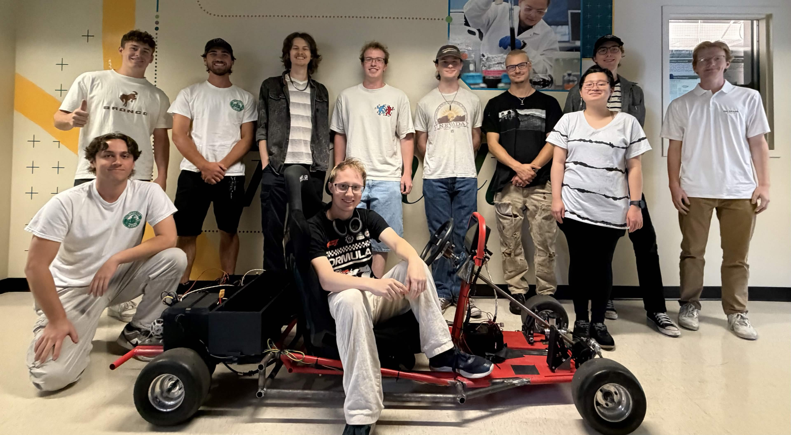
Project Overview
We are a team of senior Electrical and Computer Engineers and underclassmen who are using modern technologies to showcase high levels of applied fundamental problem solving to prospective students. The highly technical Ekart demonstrates the seamless integration of various core concepts from each of the engineering departments. The electrical engineers incorporate their skills of wiring and coding to the cart through the addition of electric powered motors that are controlled using python. The computer engineers bring new and improved topics like integrating machine learning with autonomous pedestrian recognition. The computer engineers and electrical engineers work closely together to ensure successful communication between the computer and the components of the cart. The mechanicals bring their experience of design and machining to create a stable body to house the electrical and computer components. Mechanicals also assemble the cart to improve the overall functionality and aesthetic of the electric cart. Together, all of the engineering concentrations work together to ensure the safety of both the cart and the rider. This semester's team is working on autonomous systems and improving mechanical performance of the kart. CAD models are advancing to improve the team's planning abilities.
Importance
This is an ECE Outreach project meant to showcase some of the capabilities of engineering to potential future students. The E-kart contains various examples of how different engineering fields come together in order to create a functioning machine. Seeing how these different expertises are implemented together may inspire or spark interest in those who are considering engineering as a career path. This project has the capability of catching the eye of people from elementary school up to high school and beyond.
Fall 2026 Design Goals
- Integrate autonomous braking systems with camera and LiDar sensors
- Characterize and analyzer performance of braking system
- Design and test power assisted steering system
- Shorten chassis for improved handling
- Upgrade steering system to increase stability and strength
- Create more robust wiring and electrical systems, ensuring reliability and safety
- Fix chain tensioning and dashboard mounting issues
Our Team
-
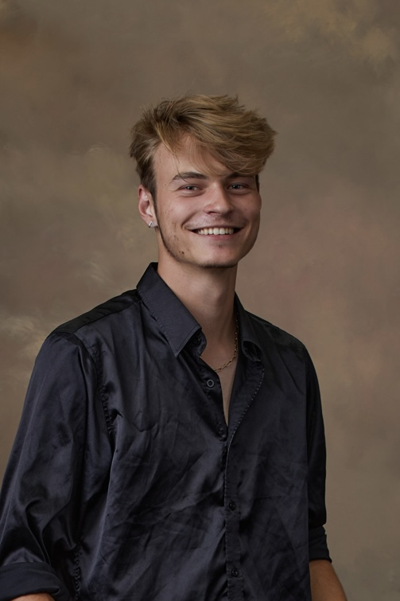
Joshua Weisner -
Individual Focus: CAN communication, dashboard UIJoshua Weisner is a Computer Engineering student graduating in December 2026.
-
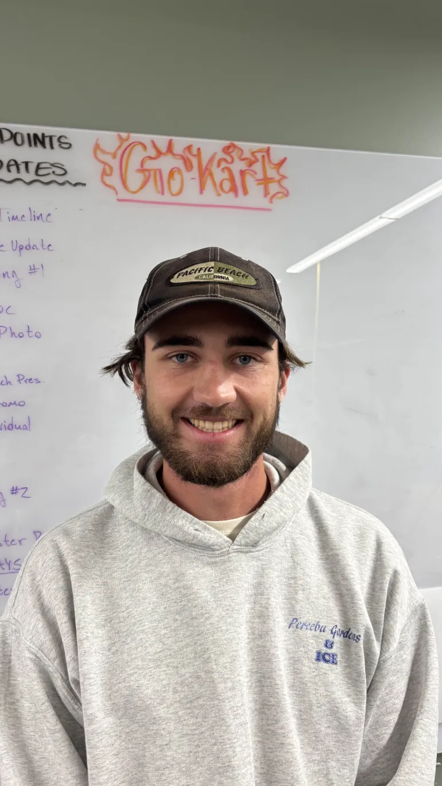
Dustin Dayer -
Individual Focus: Discs & Master Cylinder fixMehcanical Engineer
-
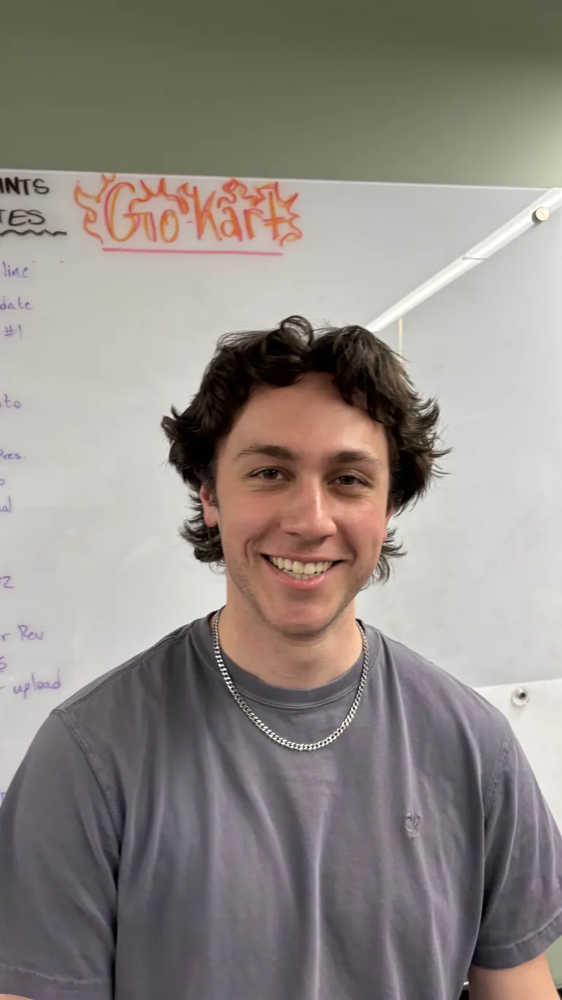
Jacob Hansen -
Individual Focus: Steering Shaft Assembly Decision & Tie RodsMechanical Engineer
-
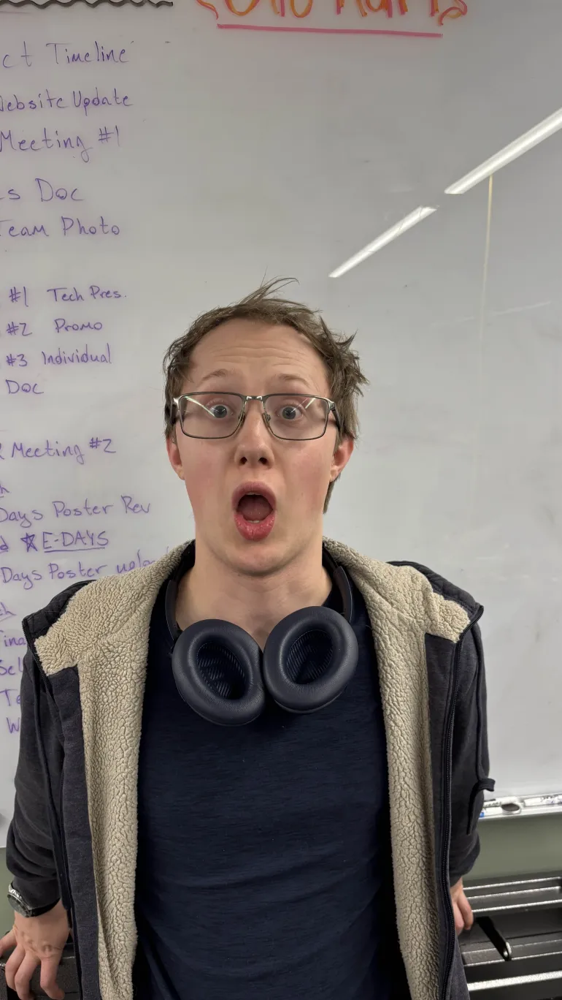
Connor Bartnick -
Individual Focus: Axle, Frame, & Components, CADMehcanical Engineer
-
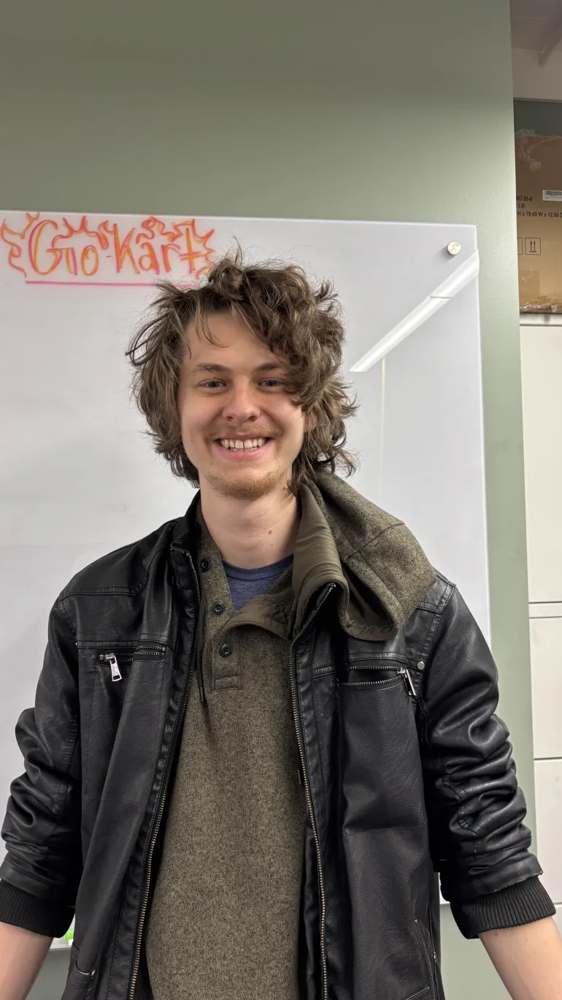
Ethan Smith -
Individual Focus: Axle, Frame, & Components, CADMechanical Engineer
-
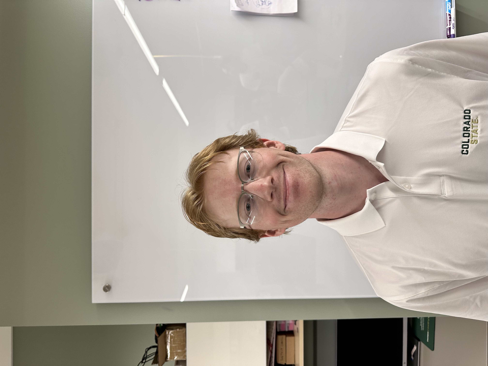
Joseph Buller -
Major: Electrical Engineering, 2027Area of Interest: Power
Semester Project Summary: Wiring and communications -
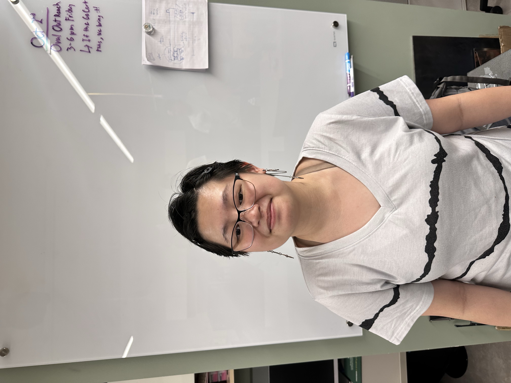
Olivia Bullock -
Major: Computer Engineering, 2027Area of Interest: Embedded systems and mathematics
Semester Project Summary: Embedded systems and mathematical problem solving -
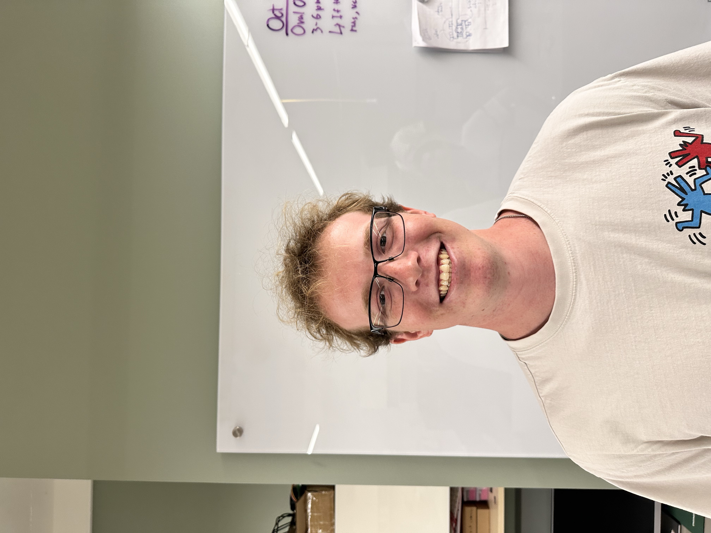
Shane Heskin -
Major: Mechanical Engineering, 2027Area of Interest: Mechanical design and fabrication
Semester Project Summary: Mechanical design and fabrication -
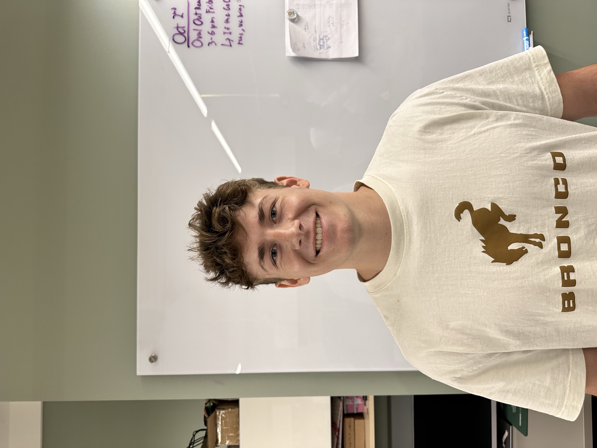
Rory Maddux -
Major: Mechanical Engineering, 2027Area of Interest: Design and manufacture
Semester Project Summary: Aerodynamic body kit -

Mitchell Ahrens -
Major: Fall 2026Area of Interest: Power and automation
Semester Project Summary: Wiring, system integration, hardware design -
Jacob Hanson -
Major: Mechanical Aerospace Engineering, Fall 2026Area of Interest: Guidance, Navigation, and Control / Propulsion
Semester Project Summary: Design, fabricate, and integrate steering components -
Olivera Notaros
Advisor
-
Matt Heath
Engineer in Residence
-
Charlie Potter
Engineer in Residence
Project Timeline
Electrical Engineering Timeline (Fall 2026):
| Task | Date Range | Team Member |
|---|---|---|
| Upgrade all faulty electrical components, and conduct risk analysis | 9/24 - 10/14 | EE Team |
| Power systems for aditional components design and validation | 10/14 - 11/13 | EE Team |
| Power system implementation final testing and integration | 11/14 - 12/14 | EE Team |
Future Work
-
Aesthetic and User Experience Improvements
Add fiber glass panels to the body of the go-kart for a more modern look. Integrate speakers and navigation systems for a better user experience.
-
Integrate Autonomous Systems
Add autonomous braking and throttle systems, which will allow the vehicle to stop and start without human input. This will be done using a combination of LiDar and camera sensors, which will detect pedestrians and other obstacles in the vehicle's path.
Fall 2026 Plans
| Discipline | Tasks / Goals |
|---|---|
| Mechanical Engineering |
|
| Electrical Engineering |
|
| Computer Engineering |
|
Media
Pictures of Go-Kart:
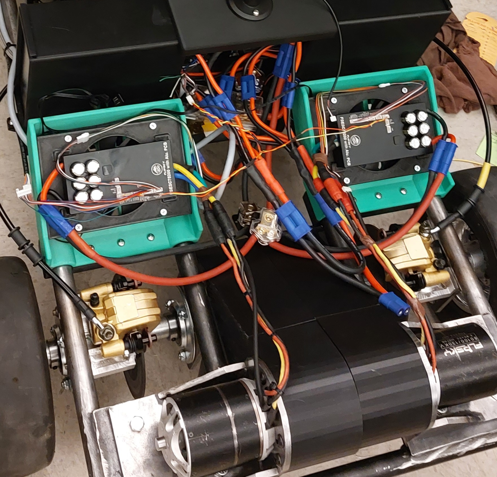
Motor Controllers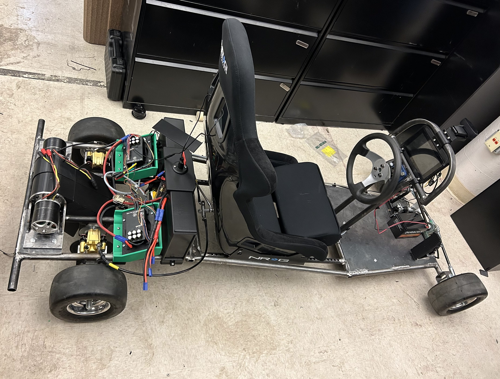
Full Build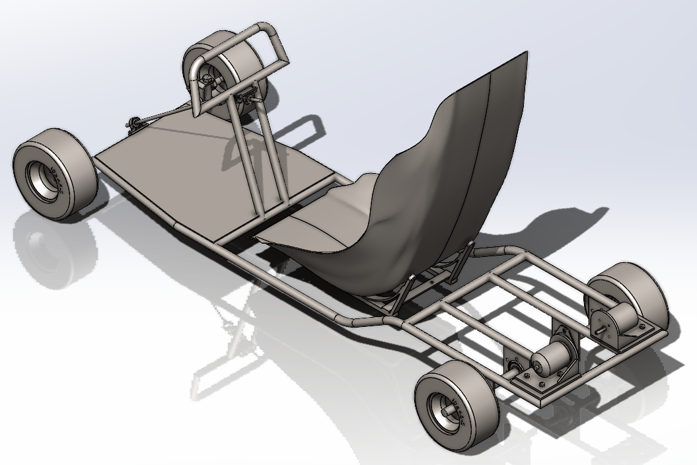
New Go-Kart CAD model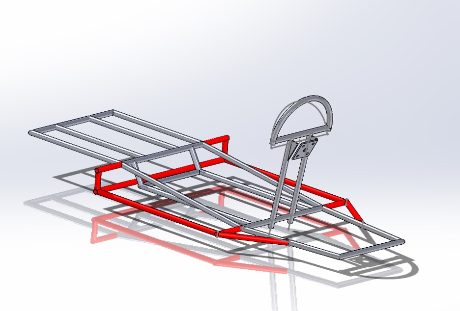
2026 Body Redesign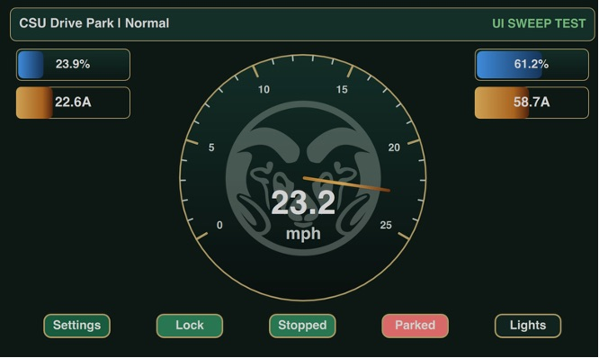
Front display UIPicture of APD System In Action:
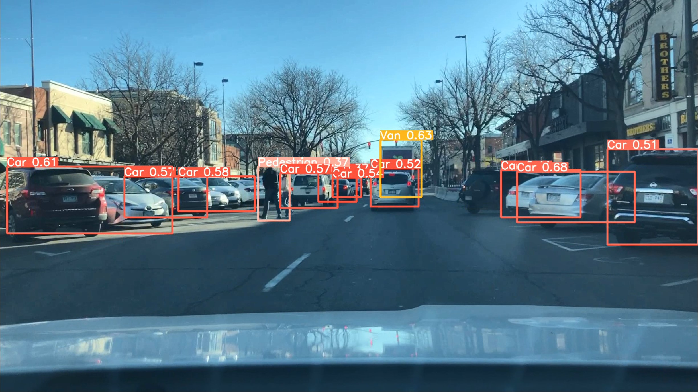
Documents
| File Name | Upload Date |
|---|---|
| GoKart Project Plan | 12/9/2025 |
| GoKart Project Plan | 2/5/2026 |
Acknowledgements
Special thanks to our previous members:
Mohammed Altarkait, Paul Brotelande, Hoguer Prieto Bustillos, Dillon Hinners, Nic Delazzer, Kyle Blain, and Gray Woodson.
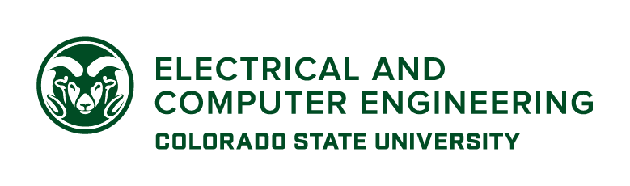